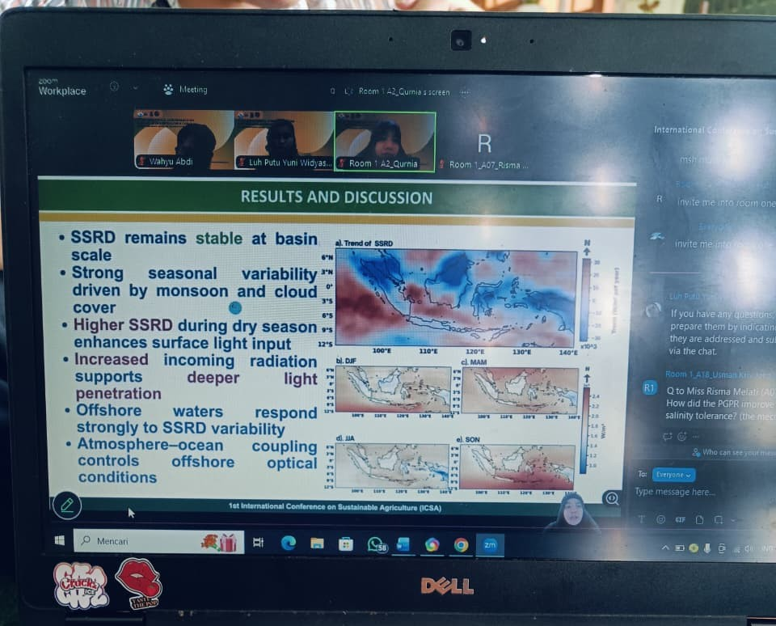
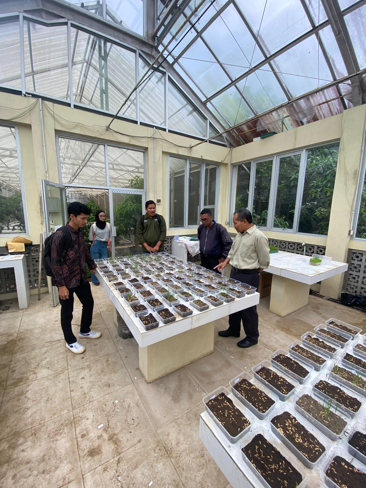
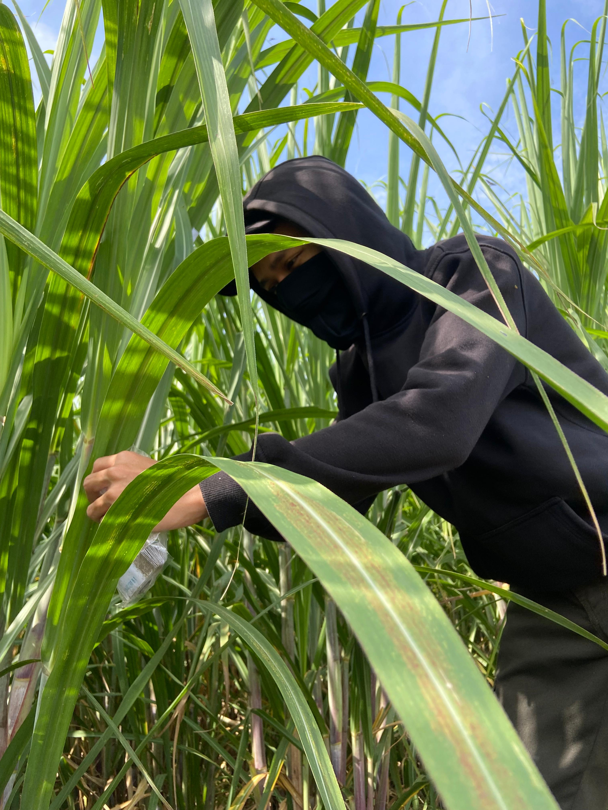
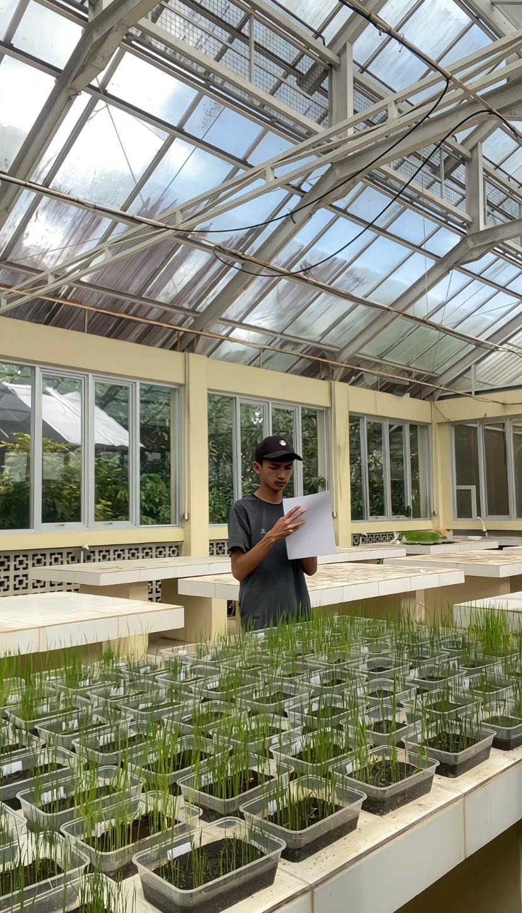
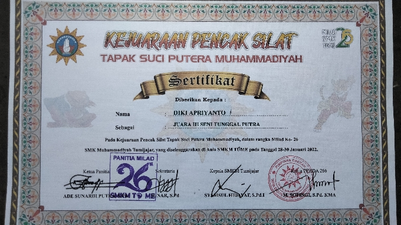
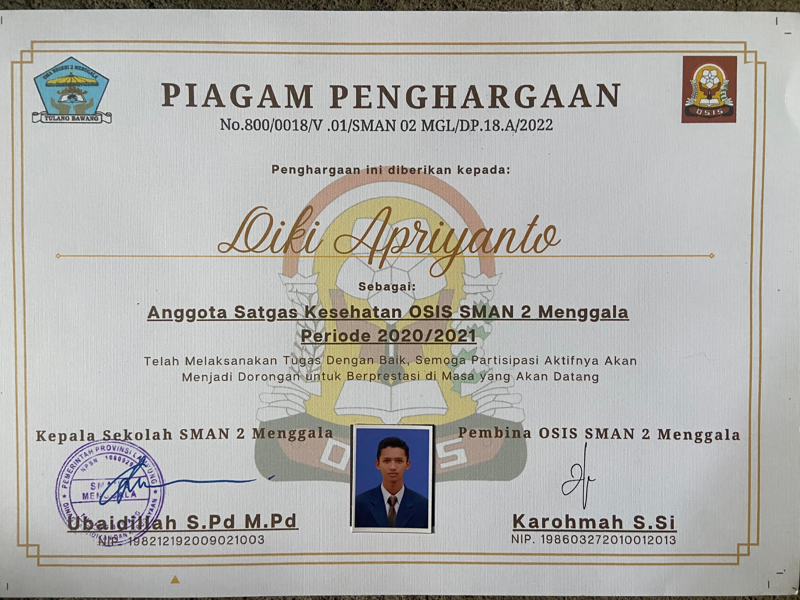
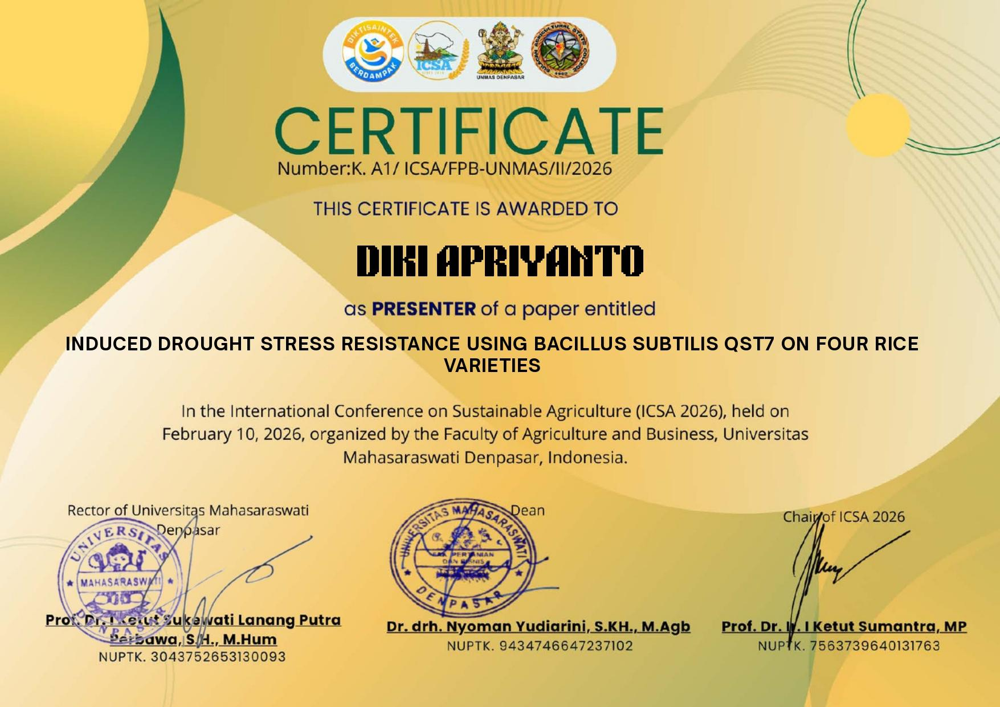
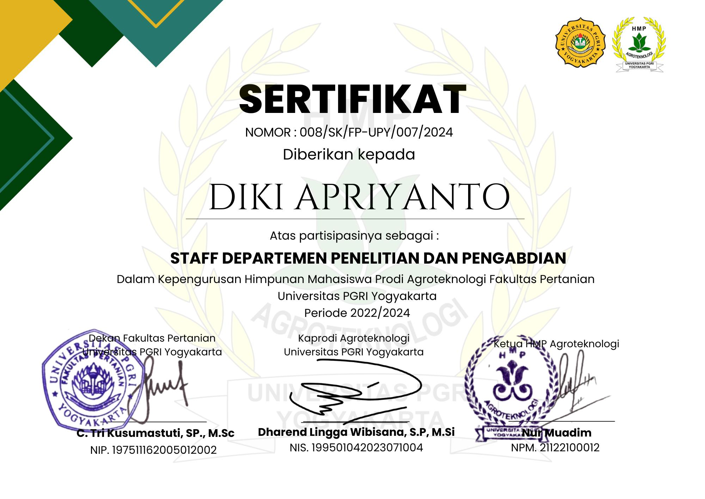

Menyampaikan hasil riset tentang ketahanan tanaman padi terhadap cekaman kekeringan di International Conference on Sustainable Agriculture. Pengalaman ini membuktikan kemampuan saya dalam analisis data dan komunikasi ilmiah di tingkat global.

Bertanggung jawab dalam pengelolaan harian tanaman di lingkungan terkontrol. Fokus pada pengujian nutrisi dan media tanam untuk mengoptimalkan pertumbuhan vegetatif dan generatif bibit tanaman.

Mempelajari siklus industri gula secara utuh, mulai dari manajemen lahan tebu hingga proses ekstraksi di pabrik. Berperan dalam pengamatan hama dan efisiensi pemupukan di lapangan.

Melakukan pengumpulan data statistik lapangan secara presisi. Terbiasa menggunakan metode ANOVA dan Regresi untuk menarik kesimpulan yang akurat guna perbaikan produktivitas pertanian.

Juara 3 Seni Tunggal Putra - Pencak Silat Tapak Suci (2022)

Anggota Satgas Kesehatan OSIS SMAN 2 Menggala

Sertifikat Presenter ICSA 2026 (Denpasar, Bali)

Staff Departemen Penelitian HMP Agroteknologi